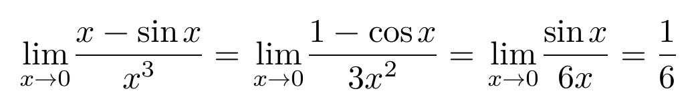
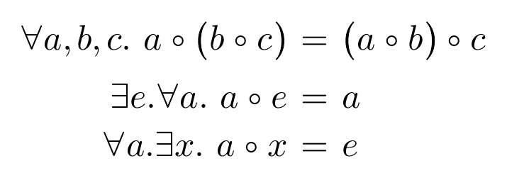
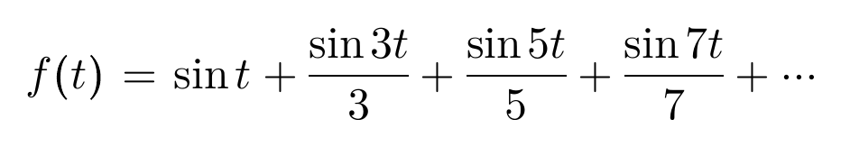

数式の基本的な使い方
このページでは、math.satyh を使って数式を扱う方法について書きます。
math 型の値
${ ... } で囲われた部分は数式として扱われます。
コード例
+p {
二次方程式${ax^2 + bx + c = 0}（ただし，${a \neq 0}）
}
コード例の組版結果 (SATySFi version 0.0.3)

数式ブロック
数式からなるブロック要素を作るには、+math を使います。末尾にセミコロンが必要です。
コード例
+math (${
x = \frac{-b \pm \sqrt{b^2 - 4ac}}{2a}
});
コード例の組版結果 (SATySFi version 0.0.3)

中級者向け: +math は標準の math.satyh で提供されているコマンドであり、組み込みコマンドではありません。このため、やろうと思えば自前で +math 相当のコマンドを作ることができます。
数式ブロック内でのプログラミング
+math に渡す引数の中にはプログラムを書くことができます。その場限りでよく使う数式を定義するのに便利です。
コード例
+math (
let limx = ${\lim_{x \to 0}} in
${
#limx \frac{x - \sin x}{x^3}
= #limx \frac{1 - \cos x}{3x^2}
= #limx \frac{\sin x}{6x}
= \frac{1}{6}
}
);
コード例の組版結果 (SATySFi version 0.0.3)

数式の中で関数を使う
math-cmd を作る let-math を使えば、数式の中で関数適用することもできます。規則的な数式を自動的に生成するとき便利です。
コード例
+math (
let-math \a n =
let odd = ${\mathit-token!(arabic (2 * n + 1))} in
${\frac{\sin #odd t}{#odd}}
in ${
\app{f}{t} = \sin t + \a!(1) + \a!(2) + \a!(3) + \cdots
}
);
コード例の組版結果 (SATySFi version 0.0.3)

中級者向け: let-math の定義本体部分では自分自身の再帰呼び出しができませんが、下のように let-rec と併用することで実装できます。
コード例
+math (
let-rec sq n =
if n <= 1 then ${\sqrt{\frac{1}{2}}}
else
let sub = sq (n - 1) in
${\sqrt{\frac{1}{2} + \frac{1}{2} #sub}}
in
let-math \sq n = sq n in
${
\sq!(1) \sq!(2) \sq!(3) \cdots = \frac{2}{\pi}
}
);
コード例の組版結果 (SATySFi version 0.0.3)

数式を並べる
複数の数式を縦に並べたブロックを作るには +align を使います。引数には数式のリストのリストを渡します。それぞれの数式を分割して渡すと、分割位置で縦に揃えて表示されます。下の例では、等号の左側の位置を揃えています。
コード例
+align [
[${\forall a, b, c.\ a \circ \paren{b \circ c}}; ${= \paren{a \circ b} \circ c}];
[${\exists e. \forall a.\ a \circ e}; ${= a}];
[${\forall a. \exists x.\ a \circ x}; ${= e}];
];
コード例の組版結果 (SATySFi version 0.0.3)

左揃えと右揃え
+align を使う際、1 行の数式を表すリストの要素は交互に右揃え・左揃えになります。それぞれの数式に説明を付けたいときに便利です。
コード例
+align [
[${\forall a, b, c.\ a \circ \paren{b \circ c}}; ${= \paren{a \circ b} \circ c}; ${\text!{（結合律）}}];
[${\exists e. \forall a.\ a \circ e}; ${= a}; ${\text!{（右単位元の存在）}}];
[${\forall a. \exists x.\ a \circ x}; ${= e}; ${\text!{（右逆元の存在）}}];
];
コード例の組版結果 (SATySFi version 0.0.3)

注意: The SATySFibook に載っている Future Work によると、+align : [(math list) list] block-cmd というインターフェースはぎこちないので将来的には LaTeX の \align 環境のようなインターフェースを用意することが検討されています。